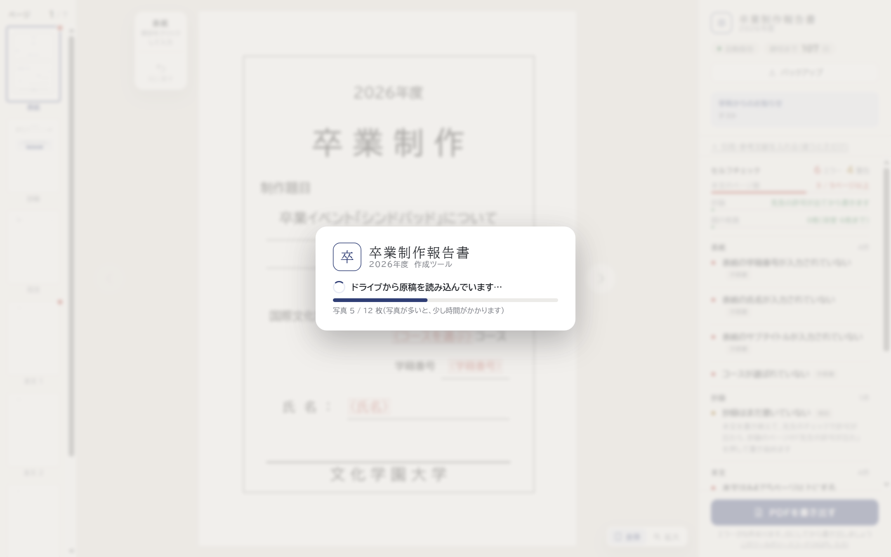
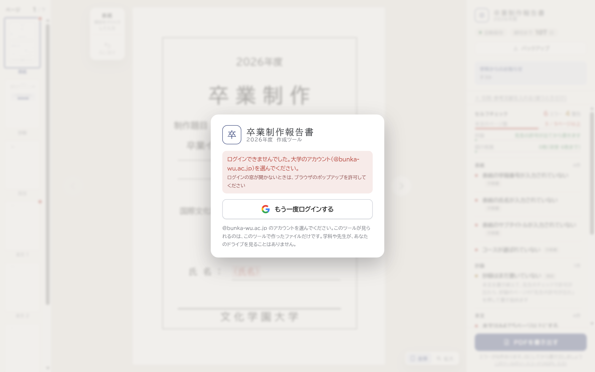
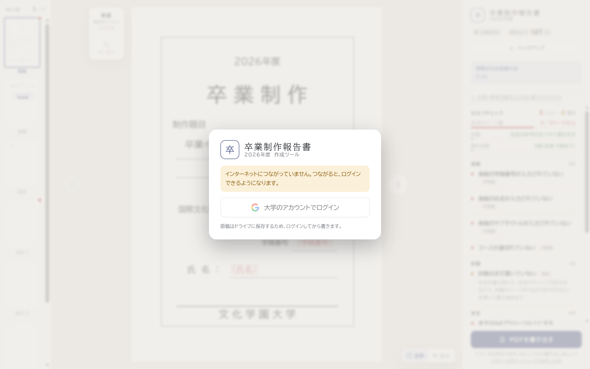
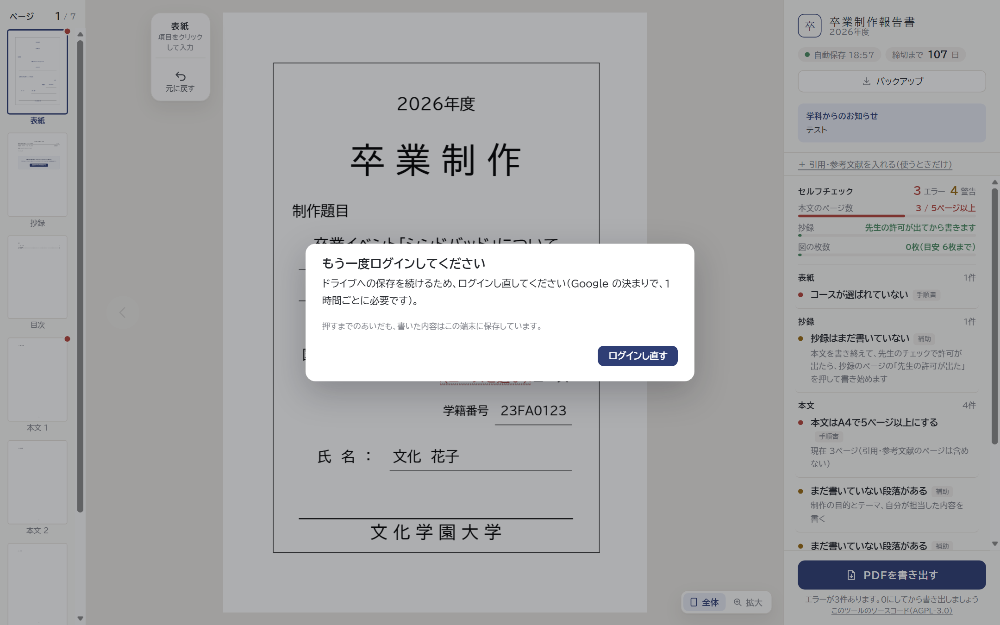

開いたら、まず大学のアカウントでログイン（見た目の案）
ツールを開くたびに、まずログインします。ログインすると、ドライブの最新の原稿が自動で開きます（初めての人は、コースを選ぶ案内へ）。2回目からは、Google の小さな窓が一瞬出て閉じるだけです。ログインできないあいだは書けません。案ごとに違うのは、ログインの画面の出し方です。
案A 紙面の上に、ログインの窓を重ねる
後ろにツールが薄く見え、真ん中にログインの窓ツールの見た目が先に分かる。いちばん簡素で、開くたびに見ても邪魔になりにくい
案B ログインだけの入口の画面
左にツールの説明と締切、右にログイン「ここで書いて提出する」ことと締切が、開くたびに目に入る。ウェブのサービスらしい入口になる。スマホでは上下に並ぶ
案C 表紙の案内の1つめを「ログイン」にする
今の「はじめての案内」（コース → 学籍番号 → …）の前に「1 ログイン」を足す初めての人には、案内の流れの中で自然にログインしてもらえる。2回目からは、ログインの段だけが出る
どの案でも共通（窓の中身。案Aの形で撮影）
ドライブから読み込んでいるとき写真の枚数で進み具合を出す
ログインできなかったとき大学のアカウントを選ぶこと、ポップアップの許可を案内する
インターネットにつながっていないときボタンは押せない。つながったら押せるようになる
書いている途中で1時間たったとき書く手を止めたときに出す。押すまでも、この端末には保存し続ける